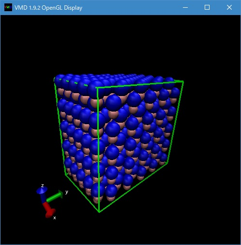

フリーな分子動力学計算プログラムの一つである LAMMPS と連携ソフトウエアを用いて、無機・金属材料の分子動力学計算を WindowsPC を用いて行う方法を説明する。
LAMMPS
分子動力学シミュレーションソフトLAMMPSは、ここから Windows 版をダウンロード可能である。
ダウンロードしたインストーラーファイル LAMMPS-64bit-stable.exe (32bitOSの場合は LAMMPS-32bit-stable.exe）をダブルクリックして、後は表示に従えば、一般のwindowsアプリケーションと同様にインストールできる。Atomsk
分子シミュレーションの支援ソフト atomsk の Windows 版はホームページからダウンロード可能である。
VMD (Visual Molecular Dynamics)
ダウンロードした zip ファイル atomsk_b0.*.*_Windows.zip を展開し、展開フォルダ中のインストーラー Atomsk_setup.exe をダブルクリックして、後は表示に従えば、一般のwindowsアプリケーションと同様にインストールできる。MD計算のスナップショットや、アニメーションの表示に用いる分子表示ソフト。
VMD は、ホームページから Windows 版をダウンロード可能である。
ダウンロードしたインストーラーファイルをダブルクリックして、後は表示に従えば、一般のwindowsアプリケーションと同様にインストールできる。VMDをコマンドラインから使用するためのコマンドパスをセットするためのバッチファイル LMPRC.bat を下記の内容、
@echo off REM REM Open DOS window with specified PATH setting. REM SET VMDDIR="C:\Program Files\VMD" SET PATH=%VMDDIR%;%PATH% IF "%1" EQU "" %windir%\system32\cmd.exe
をコピー・ペーストし、メモ帳（Windowsアクセサリの中にある）等で（テキストファイルとして）作成し、LMPRC.bat というファイル名で保存する。
LAMMPS, atomsk は上記の通りディフォールト設定でインストールすると、自動的にコマンドパスが設定される。以上で、演習環境が整うはずである。
1. 初期構造作成
例えば、シリコンのダイヤモンド構造などは、LAMMPSのコマンドで簡単に作成できる（例えばここ参照）。
一方、atomsk を用いると、結晶粒界や、点欠陥構造等、様々な構造の作成が可能なので、より多様な初期構造作成が可能である。
ここでは、LAMMPSのコマンドではダイヤモンド構造ほど簡単で無い場合の例として、窒化ガリウム(GaN)の初期構造を atomsk で作成する例を示す。まず、上記でバッチファイル LMPRC.bat を作成したフォルダで、この LMPRC.bat をダブルクリックし、LAMMPS等のコマンドパスの設定された、Windowsのコマンドプロンプト（黒いDOS窓）を起動する。
以後のコマンド入力はこの環境で行う。
まず、atomsk を用いて GaN-Wurzite結晶ユニットセル構造を作成する。
具体的には、次のコマンドを入力する。atomsk --create wurzite 3.18 5.17 Ga N -orthogonal-cell GaN-uc.lmp
上記では、wirzite型結晶を、a, c軸格子定数 3.18, 5.17、Ga, N 原子を指定して作成し、構造ファイル GaN-uc.pdb を lammpsデーターフォーマットで出力している。
-orthogonal-cell は、構造を等価な直方体で作成することを指定するもので、これが無い場合は菱面体構造が生成される。
この指定は、LAMMPSが直方体に近いセルでの計算が好まれるためである。上記で生成された構造ファイル GaN-uc.lmp を、プログラムvmdにより可視化するには、まず pdbファイル形式に変換する。
atomsk GaN-uc.lmp pdb
上記で変換された座標ファイル（拡張子が.pdbの pdb座標フォーマット）は、プログラムvmdにより図１のように可視化できる。
具体的には"コマンドプロンプト"で、vmd GaN-uc.pdb
とコマンド入力する。
最初は何も表示されないので、VMD Main ウインドウの"Graphcs - Representations" メニューを選択し、中段左の "Drawing Method" で、"VDW"（あるいは "CPK"）を選択すると、原子が表示される。
Fig. 1 Drawing Wirzite GaN with VMD
構造の回転等の操作は、ウインドウ内でマウスボタンを押しながらマウスを動かすことにより可能である。
セルは、vmdを実行したコマンドプロンプトで、
pbc box
と入力するか、あるいは、VMDのインストールフォルダにあるvmd.rcというファイルの最後に
user add key b {pbc box -color green}
を追加・保存し、分子表示画面がアクティブな状態でキーボードのｂを押すと表示できる。
終了は File メニューから Quit を選択する。上記で作成した単位格子構造から、実際のMD計算の初期構造で使うより大きなサイズの結晶構造を作成するには、下記コマンドを入力する。
atomsk GaN-uc.pdb -duplicate 5 5 5 GaN-5x5x5 pdb
上記では、元の構造をa,b,c軸方向に5x5x5した構造を作成する。
作成された構造ファイル、GaN-5x5x5.pdb も同様に VMD で可視化して確認できる（図２）。
Fig. 2 Wirzite GaN (5x5x5 unit cells) with VMD
2. LAMMPSによるシミュレーション
2.1 初期構造の準備
前節で作成した構造を、LAMMPSで計算に使うには構造出力をLAMMPSデータフォーマットで出力する必要がある。
具体的には、atomsk GaN-uc.lmp -duplicate 5 5 5 GaN-5x5x5 lmp
コマンドにより、LAMMPSデーターフォーマットでの構造ファイル GaN-5x5x5.lmp が作成できる。
2.2 エネルギー最小化計算
原理的にはこの時点でも MD 計算を始めることが可能である。 しかし、人為的に作成した初期構造は時として場合により近接した原子を含む場合がある。 このような状態から MD 計算を始めると、上記の近接原子に起因した高いエネルギーが運動エネルギーに変換され、 MD 計算における時間積分が不安定となる。 したがって、このような高エネルギー構造を緩和する目的で、まずエネルギー最小化を行うのが一般的である。
エネルギー最小化計算のスクリプトファイルの内容として、下記の内容をコピー・ペーストして、メモ帳等で（テキストファイルとして）作成し、 GaN-min.txt というファイル名で保存する。
units metal atom_style atomic boundary p p p read_data GaN-5x5x5.lmp pair_style tersoff pair_coeff * * GaN.tersoff Ga N thermo_style custom step etotal vol press thermo 10 fix 1 all box/relax aniso 0.0 minimize 0.0 1.0e-10 1000 10000 write_data GaN-5x5x5-min.lmp上記スクリプトファイル中では、
最初の３行で基本的な初期設定を行い、
read_data コマンドで、atomsk で作成した構造ファイル GaN-5x5x5.lmp を読み、
pair_style コマンドで、tersoff 型のポテンシャルを設定し、pair_coeff コマンドで、パラメータファイル GaN.tersoff を指定し、
thermo_style コマンドで、熱力学的変数の出力内容を設定し、thermo コマンドで、10 ステップ毎に出力する様設定し、
fix コマンドで、エネルギー最小化計算の内容を設定（ここでは、計算セルを非等方的に緩和）し、
minimize コマンドで 上限 1000 ステップのエネルギー最小化計算を実行し、得られた構造を、
write_data コマンドで LAMMPS データーフォーマットで、GaN-5x5x5-min.lmp として出力する様設定している。上記のスクリプトを用いたエネルギー最小化計算は、コマンドプロンプトで、
lmp < GaN-min.txt
と入力、実行する。
実行時に画面表示もされるが、ログファイル log.lammps に、上記 thermo_style コマンドで指定した内容で、エネルギー等がより低い状態に落ちていく過程が確認できる。
エネルギー最小化後の出力座標ファイル、GaN-5x5x5-min.lmp も前述の様に atomsk で pdb ファイルに変換して VMD で可視化して確認できる。2.3 スタートアップ MD 計算
上記のようにしてエネルギー最小化された構造を得たので、いよいよ MD 計算を行う。 エネルギー最小化された構造には原子の速度の情報が無いので、適当な温度を設定し、それに対応したボルツマン分布での原子速度生成を設定（下記の velocity コマンド行) し、 スタートアップ MD をまず行う。
スクリプトファイルは例えば以下のように設定する。units metal atom_style atomic boundary p p p read_data GaN-5x5x5-min.lmp pair_style tersoff pair_coeff * * GaN.tersoff Ga N thermo_style custom step etotal temp press thermo 10 velocity all create 2500 4928459 dist gaussian timestep 0.001 fix 1 all nvt temp 2500.0 2500.0 0.1 run 1000 write_data GaN-5x5x5-su.lmp上記の内容を、GaN-su.txt 等のファイル名で作成・保存し、コマンドプロンプトで、
lmp < GaN-su.txt
と入力、実行する。
上記の例では、エネルギー最小化された構造を初期構造として読み込み、初期温度は 2500 K に設定され、時間刻み 0.001 ps で 1000 ステップ (トータル 1 ps) NVT（粒子数、体積、温度一定）条件で計算している。
この出力座標ファイル、GaN-5x5x5-su.lmp も前述の様に atomsk で pdb ファイルに変換して VMD で可視化して確認できる。2.4 継続 MD 計算
上記のスタートアップMD計算以降は、write_data コマンドで書き出した GaN-5x5x5-su.lmp ファイル中の原子の速度を用い、velocity コマンドを省く事が可能である。
スクリプトファイルは例えば以下のようになる。units metal atom_style atomic boundary p p p read_data GaN-5x5x5-su.lmp pair_style tersoff pair_coeff * * GaN.tersoff Ga N thermo_style custom step etotal temp press thermo 10 dump 1 all atom 10 GaN-5x5x5-md.lammpstrj timestep 0.001 fix 1 all nvt temp 2500.0 2500.0 0.1 run 10000 write_data GaN-5x5x5-md.lmp上記を、GaN-su.txt と同様にして、”メモ帳”等のエディタで、ファイル名 GaN-md.txt として作成する。
上記スクリプトでは、read_data コマンドで読み込んだ GaN-5x5x5-su.lmp ファイル中の原子の速度を用いるため、 GaN-su.txt にあった volocity コマンドが無い。
一方で、dump コマンドにて、原子座標が 10 ステップ毎に書き出す設定が追加されている。
上記スクリプトを用いて、下記の様に MD計算を行う。lmp < GaN-md.txt
前述の様に、上記の計算ではファイル GaN-5x5x5-md.lammpstrj に計算途中の原子トラジェクトリを出力している。 このトラジェクトリ出力は、可視化プログラム vmd でアニメーションとして見る事ができる。
トラジェクトリファイル GaN-5x5x5-md.lammpstrj をアニメーションとして見るには、
vmd GaN-5x5x5-md.lammpstrj
とコマンド入力すれば良い。
アニメーションの再生・停止等は、Mainウインドウ下部のそれぞれのボタンを押すことにより可能である。4. おわりに
フリーに入手できるソフトウエアにより、手元の WindowsPC で MD 計算を実感して頂くことを念頭に、実践的な演習を試みた。 （注意本稿の内容や、関連するプログラムの実行の結果発生した PC 障害等に関しては一切保障できないので、くれぐれもオウンリスクにて実行願います）。
時間の関係上、 LAMMPS や atomsk のコマンド及びそのオプション等についても、詳しい説明ができなかったが、それぞれホームページに詳細なマニュアルがあるので、必要に応じて御確認頂きたい。
2023年02月24日更新
E-mail: makoto.yoneya(at)gmail.com